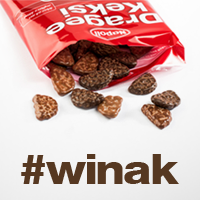

Welcome to winak’s documentation!
This package contains routines for construction and use of
curvilinear coordinates in molecular simulation and electronic structure tools.
Its main purpose at the moment is global structure search for clusters [Panosetti2015]
and molecules at surfaces [Krautgasser2016] using these coordinates.
It is meant to be interfaced with the Atomic Simulation Environment (ASE) [ASE]
Feature List
- Internal and Curvilinear coordinate construction for isolated and periodic systems
- Supports sparse matrices and systems of 1000 to 10000 atoms
- Global Geometry optimization / BetterHopping code
- Many helpful data analysis tools
Potential Future Features
- Interfaces to interpolation software
- local optimization in curvilinear coordinates
Dependencies
- Python 2.7.x
- NumPy >= 1.6
- SciPy >= 0.12
- Cython>= 0.20
- scikits.sparse >=0.1 [ Scikits.Sparse ](https://github.com/njsmith/scikits-sparse)
(depends itself on CHOLMOD/SuiteSparse)
- Atomic Simulation Environment [ASE]
(for interface to molecular mechanics and electronic structure codes)
Contents:
References
| [Panosetti2015] |
- Panosetti, K. Krautgasser, D. Palagin, K. Reuter, and R. J. Maurer, Global Materials Structure Search with Chemically Motivated Coordinates, Nano Lett. 15, 8044-8048 (2015)
|
| [Krautgasser2016] |
- Krautgasser, C. Panosetti, D. Palagin, K. Reuter, and R. J. Maurer, Global Structure Search for Molecules on Surfaces: Efficient Sampling with Curvilinear Coordinates, J. Chem. Phys 145, 084117, (2016)
|
| [Wales1] | Wales and Doye, J. Phys. Chem. A, vol 101 (1997) 5111-5116 |
| [Wales2] | David J. Wales and Harold A. Scheraga, Science, Vol. 285, 1368 (1999) |
{kind=link}